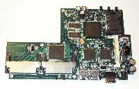

Unix-like operating systems aren't picky at all. Despite the extreme physical conditions, they can take root on those old computers where most (proprietary) operating systems risk extinction and help them, after years of faithful service, to start new lives as firewalls, routers, proxies and so on.
But sometimes this is not enough: servers must be reliable and old computers are (guess what?) ...old, and this increases their risk of health problems. That's why embedded systems are a great option: they are (relatively) inexpensive, silent, small, reliable... What else could you need? Ok, you'll have to actually deal with very basic hardware, but the right OS, with the right configuration, will wallow in it!
The use of these computers ranges from firewalls to access points, to VPN servers and so on; what characterizes them is their minimal hardware configuration (especially the small amount of disk space) which may make the installation procedure a bit unusual and custom. However, post-installation configuration is absolutely normal; that's why, throughout this document, we will only focus on the main methods to enclose our favourite OS in those few inches of integrated circuits.
The basic tools we will use are:
secure by defaultoperating system, particularly well suited for "ultra-light" installations and security-critical applications;
A solid knowledge of OpenBSD is assumed, since we will have to go through building a custom kernel (and we won't dwell on this topic too long) and finding out all the configuration, startup and executable files strictly necessary to build a minimal, yet fully functional, system.
There are many ways to install the operating system, each with its own peculiarities and, therefore, best suited for different situations and needs:
In any case, if you use a Compact Flash card as mass memory, keep in mind that it has a limited number of write cycles and therefore will last longer if mounted read-only: logging or swapping to it would eventually render it unusable. The most common configuration is to mount the whole filesystem read-only, except for the /tmp, /root and /var directories, which are mapped to memory. Anyway, this doesn't mean you won't be able to make changes to the filesystem, but only that every time you will need to edit a file on the disk you will have to first mount it read-write:
# mount -o rw,noatime /dev/wd0a /
and then rememeber to mount it back read-only when you're done.
# mount -o ro /dev/wd0a /